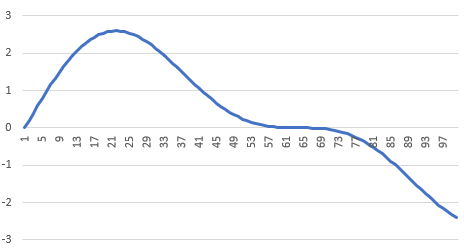
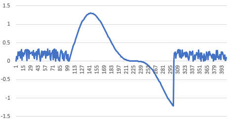

Розпізнавання та аналіз сигналів та зображень є важливим напрямком штучного інтелекту. Алгоритми розпізнавання широко використовуються для вирішення багатьох повсякденних задач – розпізнавання обличь в камерах для автофокусу, розблокування телефону по обличчу, чи для підтвердження особистості при виконанні певних операцій в інтрернеті. Розпізнавання рукопису для рукописного вводу тексту, розпізнавання мовлення для отримання голосових команд, чи голосового вводу тексту, чи розпізнавання радіосигналу для апарату з дистанційним керуванням Але в реальності часто складно встановити наскільки схожим об’єкт є на еталонний, так як при розпізнаванні в реальних умовах часто доводиться мати справу з викривленням даних. Причиною цьому може бути недосконала апаратура, шуми, зміщення, поворот, чи розтягнення об’єкту в просторі. Тому часто задача полягає ще й в тому, щоб зробити метод розпізнавання інваріантним до певних змін, або ж відфільтрувати данні, та отримати максимально наближену до реальності інформацію про об’єкт, який розпізнається. До того ж, часто стоїть задача саме розпізнавання сигналу в реальному часі – як от наприклад, для розпізнавання радіосигналу, чи голосових команд. Тому необхідно, щоб метод міг оперативно аналізувати вхідні данні, та не вимагав для розпізнавання тривалого спостереження за об’єктом розпізнавання. Зазвичай для цього використовуються різні кореляційні оцінки: евклідова, Хемінга, Махаланобіса, тангенціальна, визначення косинуса кута між векторами, що відповідають зображенням, міри Кульбака, Колмогорова, Бхачатарія та ін.[1] Ці характеристики можуть чисельно показати, наскільки об’єкт є схожим на еталон. Задача розпізнавання полягає в тому, щоб визначити, на який з еталонних об'єктів найбільш схожий об'єкт, що розпізнається.
Розробити інформаційну систему для розпізнавання еталонного сигналу при невідомому коефіцієнті стискання в часі, дослідити використання функцій непропорційності для задач вирішення задач розпізнавання образів.
Існує певний набір еталонних сигналів, кожен сигнал який можна задати формулою y=f(t), де t - час. При аналізу вхідного сигналу, відбулось стискання в часі та в амплітуді. Таким чином сигнал має вигляд y=A*f(kt + T). Потрібно проаналізувати вхідний сигнал, виявити фрагменти яких еталонних сигналів наявні в цьому фрагменті.

